Lesson content · 课文
Lesson 48: Do you like ...? Do you want ...? · 你喜欢……吗？你想要……吗？
Listen and answer the questions. 听录音并回答问题。
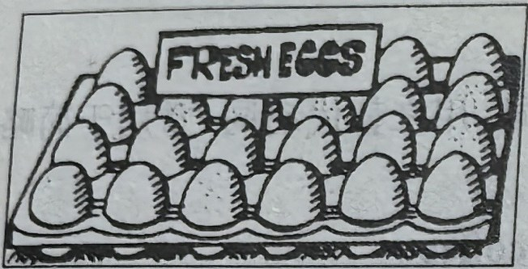
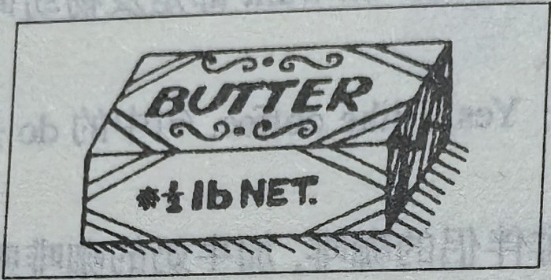
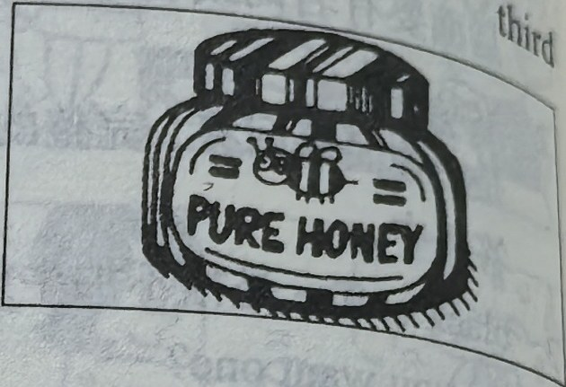
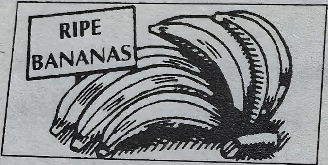
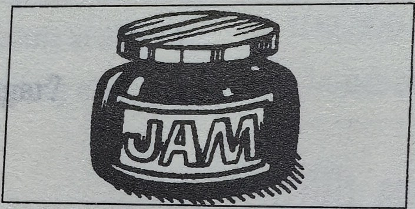
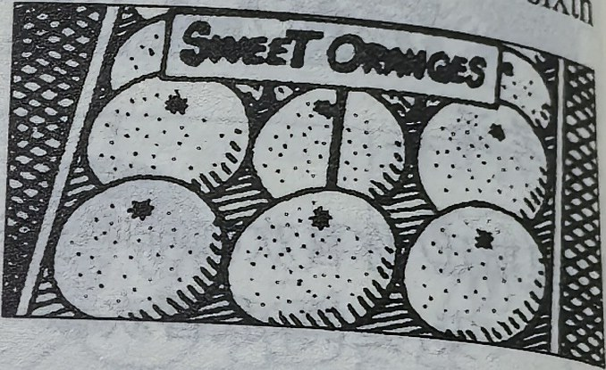
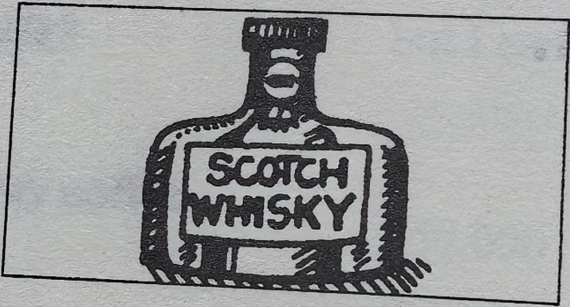
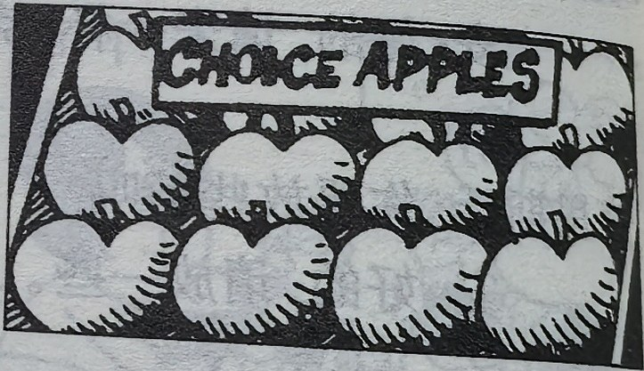
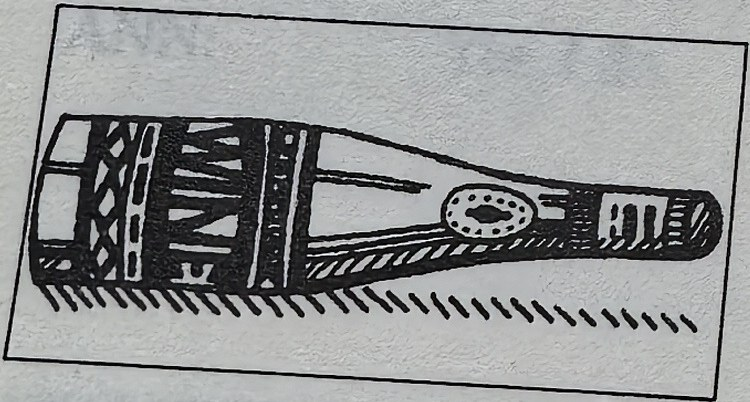
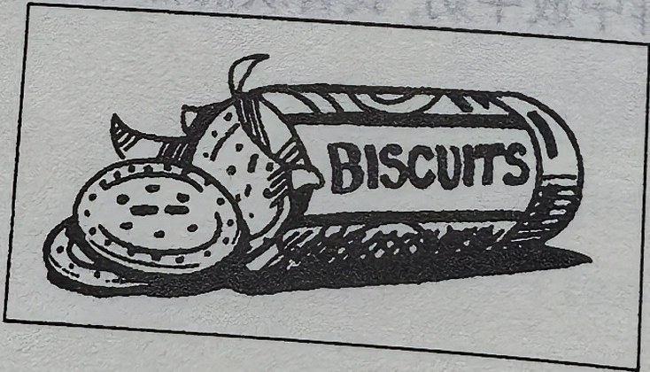
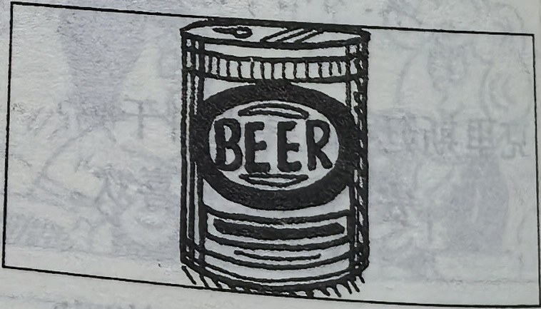
New words and expressions · 生词和短语
| Word · 单词 | Pronunciation · 音标 | Meaning · 词义 |
|---|---|---|
| fresh | /freʃ/ | adj. 新鲜的 |
| egg | /eɡ/ | n. 鸡蛋 |
| butter | /ˈbʌtə/ | n. 黄油 |
| pure | /pjʊə/ | adj. 纯净的 |
| honey | /ˈhʌni/ | n. 蜂蜜 |
| ripe | /raɪp/ | adj. 成熟的 |
| banana | /bəˈnɑːnə/ | n. 香蕉 |
| jam | /dʒæm/ | n. 果酱 |
| sweet | /swiːt/ | adj. 甜的 |
| orange | /ˈɒrɪndʒ/ | n. 橙 |
| Scotch whisky | /ˌskɒtʃ ˈwɪski/ | 苏格兰威士忌 |
| choice | /tʃɔɪs/ | adj. 上等的，精选的 |
| apple | /ˈæpl/ | n. 苹果 |
| wine | /waɪn/ | n. 酒，果酒 |
| beer | /bɪə/ | n. 啤酒 |
| blackboard | /ˈblækbɔːd/ | n. 黑板 |
Practice · 课文练习
Written exercises · 书面练习
A. Prepositions · 介词
Complete these sentences using off, over, between, along, in front of, behind, under or across. 完成以下句子，用 off、over、between、along、in front of、behind、under 或 across 等介词或介词短语填空。
-
textbook: A. Prepositions · 介词 — The aeroplane is flying ____ the village.
-
textbook: A. Prepositions · 介词 — The ship is going ____ the bridge.
-
textbook: A. Prepositions · 介词 — The children are swimming ____ the river.
-
textbook: A. Prepositions · 介词 — Two cats are running ____ the wall.
-
textbook: A. Prepositions · 介词 — The boy is jumping ____ the branch.
-
textbook: A. Prepositions · 介词 — The girl is sitting ____ her mother and her father.
-
textbook: A. Prepositions · 介词 — The teacher is standing ____ the blackboard.
-
textbook: A. Prepositions · 介词 — The blackboard is ____ the teacher.
B. Answer these questions · 回答问题
Answer these questions. 模仿例句回答问题，注意可数名词与不可数名词的区别。
Example · 例句
Do you like eggs?
Yes, I do.
I like eggs, but I don’t want one.
Do you like butter?
Yes, I do.
I like butter, but I don’t want any.
-
textbook: B. Answer these questions · 回答问题 — Do you like honey?
-
textbook: B. Answer these questions · 回答问题 — Do you like bananas?
-
textbook: B. Answer these questions · 回答问题 — Do you like jam?
-
textbook: B. Answer these questions · 回答问题 — Do you like oranges?
-
textbook: B. Answer these questions · 回答问题 — Do you like ice cream?
-
textbook: B. Answer these questions · 回答问题 — Do you like whisky?
-
textbook: B. Answer these questions · 回答问题 — Do you like apples?
-
textbook: B. Answer these questions · 回答问题 — Do you like wine?
-
textbook: B. Answer these questions · 回答问题 — Do you like biscuits?
-
textbook: B. Answer these questions · 回答问题 — Do you like beer?
Practice worksheet · 配套练习
A. Questions and answers
Ask and answer like the examples. 模仿例句提问并回答。
| Form · 句式 | Example · 例句 |
|---|---|
| Positive | I like butter. |
| Negative | I do not like butter. or I don’t like butter. |
| Question | Do you like butter? |
| Short answers | Yes, I do. or No, I don’t. |
Example · 例句
Do you like oranges? — Yes, I do. I like oranges, but I don’t want one now.
Do you like ice cream? — Yes, I do. I like ice cream, but I don’t want any now.
-
worksheet: A. Questions and answers — apples
-
worksheet: A. Questions and answers — tea
-
worksheet: A. Questions and answers — biscuits
B. Situations
What do you say? 根据以下情景写出你应该说的话。
-
worksheet: B. Situations — Someone offers you a cup of tea. Accept the offer.
-
worksheet: B. Situations — Someone offers you a glass of wine. Refuse the offer.
C. About you
Answer with Yes, I do or No, I don’t, but I like … . 用 Yes, I do 或 No, I don’t, but I like … 来回答以下问题。
-
worksheet: C. About you — Do you like bananas?
-
worksheet: C. About you — Do you like black coffee?
-
worksheet: C. About you — Do you like German cars?
Original images · 原图对照
Expand a page to compare it with the transcription. Open the original in a new tab to zoom in.
展开原图核对文字，也可以在新标签页打开原图放大查看。
Lesson text and oral practice · 课文与口头练习
Open original · 打开原图 ↗ Download original · 下载原图

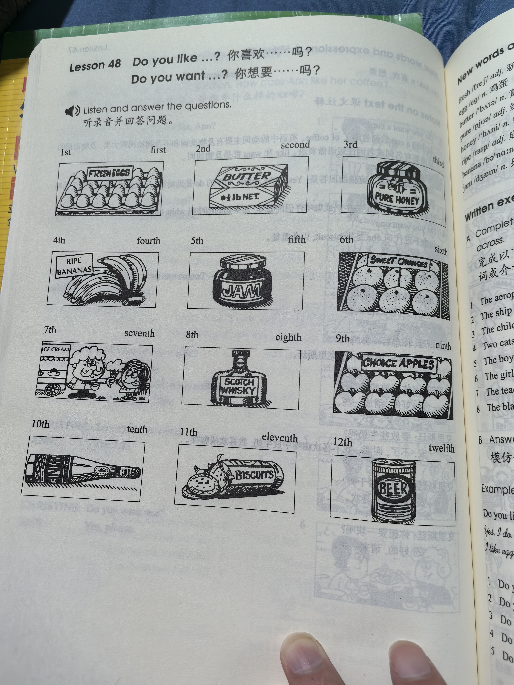
Vocabulary, notes and written exercises · 生词、注释与书面练习
Open original · 打开原图 ↗ Download original · 下载原图

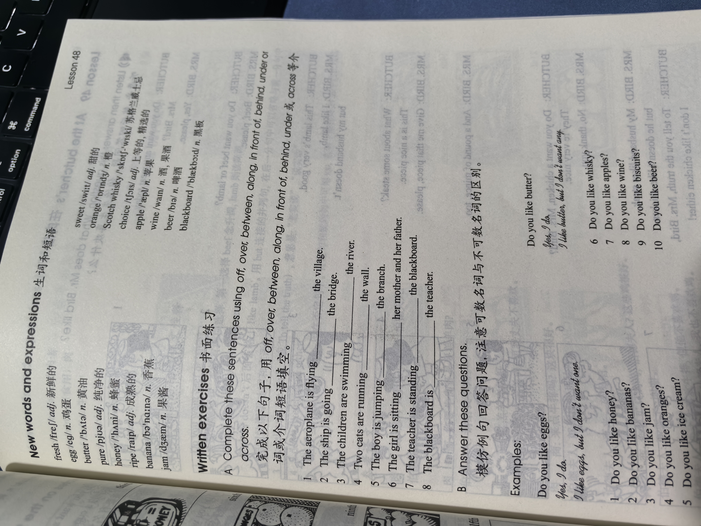

Grammar practice · 语法练习
I. Give correct replies to the sentences according to the examples
- 1. There's a small apple on the plate. (big)
I don't want a small one. I want a big one.
- 2. There are some red apples in the basket. (green)
I don't want any red ones. I want some green ones.
- 3. This ice cream is for you. (that)
- 4. Here's a cup of coffee for you. (a cup of tea)
- 5. I'm going to give you an old handbag. (new)
- 6. There are some short pencils in the box. (long)
- 7. Here are two blue hats. (red)
- 8. There are some biscuits in the cupboard. (a cake)
- 9. Here's a cup. (a glass)
- 10. I'm going to buy you a bottle of beer. (wine)
II. Answer the questions according to the example
- 1. Do you like cheese and butter?
I like cheese, but I don't like butter.
- 2. Do you like green tea and black tea?
- 3. Do you like red wine and white wine?
- 4. Do you like honey and jam?
- 5. Do you like white clothes and black clothes?
- 6. Do you like oranges and bananas?
- 7. Do you like American cars and Korean cars?
- 8. Do you like English and German?
- 9. Do you like Mercedes and Ford?
- 10. Do you like cakes and biscuits?
Your notes and answers
Use this space for longer responses or exercises that do not have an individual answer box.